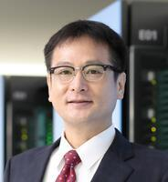

特別講演
Visualizations during the COVID-19 Pandemic
Prof. Xiaoru Yuan （北京大学）
During the still ongoing COVID-19 pandemic, visualization has demonstrated its unique power in communication during the information era. In this talk, I will first present a series of visualizations done by my team and collaborators in the beginning of 2020 on the theme of COVID-19. Among them, some visualizations have been broadcasted by the media with a large audience. Then a visual analytical platform for collaboratively collecting, annotating, and analyzing a global collection of visualizations related to the COVID-19 pandemic will be introduced. The visualization samples we have collected through this platform could inspire further research in the direction of understanding how visualizations interact with the society. Key findings from this systematic approach will be discussed.
- 略歴
- Xiaoru Yuan is a tenured faculty member in the School of Electronics Engineering and Computer Science. He currently also serves as the deputy vice director of National Engineering Laboratory on Big Data Analysis and Applications and vice director of Key Laboratory of Machine Perception (MOE), at Peking University. He leads the visualization and visual analytics lab and serves as the vice direction of Key Laboratory of Machine Perception at Peking University. He received the Ph.D. degree in computer science in 2006, from the University of Minnesota at Twin Cities. His primary research interests are in the field of visualization and visual analytics. His co-authored work on high dynamic range volume visualization received Best Application Paper Award at the IEEE Visualization 2005 conference. He and his student team won awards multiple times in IEEE VAST Challenges. He received the Okawa Research Fund Award in 2018. He served on the program and conference committees of IEEE VIS, ACM CHI, EuroVis, and IEEE PacificVis. He was organization co-chair of IEEE PacificVis 2009, poster chair of IEEE VIS 2015/2016, paper chair of IEEE VIS 2017 and PacificVis 2015, and 2021 VIS area paper chair. He is on the editor board of IEEE TVCG, Journal of Visualization and several other international journals. He initiated and co-founded ChinaVis conference in 2014. He is the director of the visualization and visual analytics technical committee at China Society of Image and Graphics.
スポーツ技能獲得支援のためのVR/AR視覚的トレーニングシステム
小池 秀樹教授（東京工業大学）
多くのスポーツにおいて正しい運動姿勢を習得することは重要である．現在はビデオ撮影を行い，運動後にプレビューを行うのが一般的であるが，実時間でのフィードバックが理想的である．また，実際のスポーツは動作が高速なため正しい姿勢の把握が困難で，何度もトレーニングを行う必要がある．
本講演では，我々の研究グループが開発したVR/ARを用いた視覚的トレーニング環境について述べる．1つ目はゴルフとスキーを対象とし，熟練者と学習者の差分を様々な視覚化手法を用いて実時間提示するシステムである．2つ目は卓球を対象とし，VR空間を用いてボールの速度を変化させることで高速なスピンボールの返球を効果的に習得させるシステムである．
- 略歴
- 1986年東京大学工学部卒業、1991年東京大学大学院工学系研究科情報工学専攻修了。工学博士。1991年 電気通信大学助手、助教授、教授を経て、2014年より東京工業大学教授、現在に至る。この間、UC Berkeley客員研究員(1994-1996)、Sydney大学客員研究員(2003)、内閣事務官（情報セキュリティ）(2003-2006)などを併任。Human-Computer Interaction(HCI)の研究に従事。特に、情報視覚化、Vision-based HCI、Projector-Camera System、 Digital Sports、 Usable Securityなどに興味を持つ。1991年日本ソフトウェア科学会高橋奨励賞、1998年 IEEE VR Honorable Mention、 2002年 日本バーチャルリアリティ学会論文賞、 2013-2015年 Laval Virtual Award、 2013、2014、2017年 経済産業省Innovative Technologies、 2013年 テレビ東京トレたま年間大賞、2018 ACM ISS Best Paper Honorable Mention、 2018 ACM VRST Honorable Mention (poster&demos)、 2021 IEEE Trans. on Haptics Best Application Paperなど多数受賞。
「富岳」を用いた飛沫・エアロゾルの可視化と新型コロナ感染リスク評価による社会啓発

2019年末に中国で発生した新型コロナウイルスは、瞬く間に世界中に蔓延し、我々の生活を一変させた。この未知のウイルスはどのような経路で人から人に感染するのか？我々のグループでは、最新鋭スパコン「富岳」を用いて膨大なシーンでの飛沫・エアロゾルの飛散シミュレーションを行い、感染リスクを評価することで、社会に対して飛沫感染に対する理解と感染予防の重要性を啓発してきた。本講演では特に、感染症に対する社会啓発における可視化の重要性と共に、その限界や問題点についても議論したい。
- 略歴
- 1992年京都大学工学部卒業、1997年東京大学大学院工学系研究科機械工学専攻修了。博士（工学）。1997年 学術振興会特別研究員、1999年 東京工業大学講師、2003年 電気通信大学助教授、2007年 北海道大学准教授を経て、2012年より理化学研究所計算科学研究機構チームリーダー、2015年 神戸大学教授、現在に至る。数値解析手法・HPC環境向けシミュレーションソフトの研究に従事し、流体・構造・熱・音・化学反応などを同時に扱う複雑・複合現象シミュレーションソフトウェア「CUBE」、「FrontFlow/red-HPC」の開発や、自動車空気力学、空力音響学、スポーツ流体力学、バイオ・生体分野の学術的・産業的課題に取り組んでいる。2014年 自動車技術会 2013年度技術部門貢献賞、 2017年 自動車技術会 創立70周年記念貢献表彰、 2017年 日本機械学会流体工学部門 フロンティア表彰、 2017年 日本機械学会 創立120周年記念功労者表彰、 2018年 日本計算工学会 川井メダル、2018 日本バイオメカニクス学会学会賞、 2020年 神戸大学学長表彰、 2021年 理化学研究所栄峰賞など多数受賞。日本流体力学会、日本機械学会、自動車技術会フェロー。